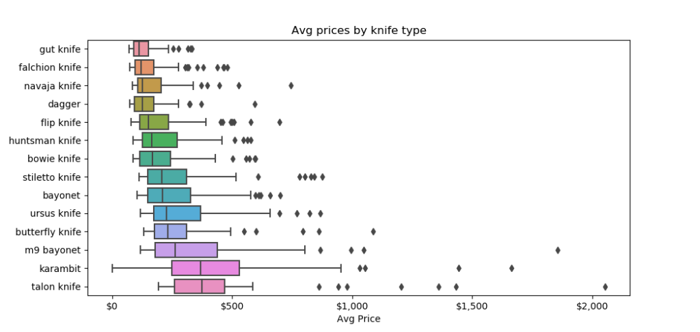

Welcome to CS:2 (Formally CS:GO) Skins World
CS skins have revolutionized the gaming and skin worlds, turning virtual items into valuable collectibles with ecosystems around them. These unique weapon designs not only look cool, but have created an entire economy within the game.

The rarity of CS skins ranges from Consumer Grade (white) to Covert (red), with each tier becoming increasingly rare and valuable. Some skins can sell for thousands of dollars, making them highly sought after by collectors.

Factors affecting a skin's value include its wear condition, pattern index, and whether it's StatTrak™. Factory New condition skins are typically the most valuable, while Battle-Scarred skins show significant wear.